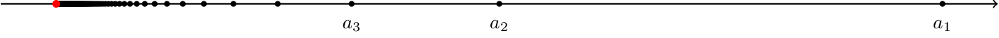

Послідовності. Вступ до границь.
Із чого треба почати, так це з означення послідовності. Для початку розглянемо приклад, що допоможе простіше зрозуміти надане скоро означення.
Скажемо, у нас є ось такі числа:\( \{ 3,5,-1, 1.5, 10, 0, 3, \dots \} \). Будемо вважати в такому випадку, що першому числу
ставиться в відповідність перше число з цього рядку, тобто \( 3 \), другому числу ставиться в відповідність друге число з цього
рядку, тобто \( 5 \) тощо. Це можна позначити іншим чином:\(a_1 = 3, a_2 = 5 \). Літерою я підкреслюю, що ми маємо справу саме
з цією послідовностю. Також зауважу, що числа можуть повторюватись. Конкретно в нашому прикладі \(a_1 = 3, a_7 = 3 \). Це був приклад числової послідовності.
Числовою послідовністю називають занумерований набір чисел.
Позначення: \( \{a_n, n \geq 1\} = \{a_1,a_2,a_3,\dots \} \)
Числові послідовності можна задавати (принаймні я так знаю) трьома способами:
- Випадковим чином
- Формулою
- Рекурсивно
- Це приклад послідовності, що я надавав в самому початку.
- Встановимо послідовність \( \{a_n, n \geq 1 \} \) таким чином: \( a_n = \frac{1}{n} \). Тобто ми маємо послідовність з таких чисел:
\( \{ 1, \frac{1}{2}, \frac{1}{3}, \dots \} \).
- Цей типаж є більш складним. Наприклад, послідовність \( \{b_n, n \geq 1 \} \) задамо ось так: \( b_1 = 1, b_n = 4 + b_{n-1}, n \geq 2 \). Тобто кожний
член може бути отриманий через (не обов'язково одного) його попередника.
А тепер більш детально повернемось до послідовності формули \( a_n = \frac{1}{n} \) , оскільки він є більш особливим на розглядання.
Якщо отримати перші члени, то поки нічого цікавого ми не побачимо. Але ми розглянемо числа з великими номерами: \( 100, 1000, 10000, \dots \). Математично
можна сказати так: (n appr inf), "n прямує до нескінченності". Так ось, маємо такі числа:
\(a_{100} = \frac{1}{100} = 0.01 \)
\(a_{1000} = \frac{1}{1000} = 0.001 \)
\(a_{10000} = \frac{1}{10000} = 0.0001 \)
Можна зауважити, що, збільшуючи номер члена послідовності, ми все ближче наближаємось до числа \(0 \) за умовою, що
(n appr inf). Таку закономірність варто строго математично визначити. Проте для початку підемо здалеку.
Проставимо всі числа нашої послідовності на числовій прямій - буде така картина

Червона точка - це моє число \( 0\). Бачимо, що ми з кожним разом підходимо все ближче. Як записати формально 'підходимо все ближче'?
Встановимо навколо точки червоний коридор: ми відійдемо праворуч та ліворуч на деяке число (let eps). Отримаємо інтервал
\( (0-\varepsilon, 0+\varepsilon) \). Якщо візьмемо (let eps) доволі великим, скажімо 1.5 або більше, то
зауважимо, що всі чорні цяточки потраплять в наш створений коридор. Будемо поступово зменшувати її, хай буде \( \varepsilon = 0.1 \).
Уже тоді деякі члени послідовності лишаться за межами коридору, проте починаючи з деякого номеру, всі решта члени послідовностей потраплять всередину.
Як математично записати речення 'починаючи з деякого номеру, всі решта члени послідовностей потраплять всередину'? Ось так:
\( \exists N \in \mathbb{N}: \forall n \geq N: a_n \in (0-\varepsilon,0+\varepsilon) \). Якщо саме таке твердження виконується
для будь-якого обраного \( \varepsilon > 0 \), тобто \( \forall \varepsilon > 0 \), то число
\(0 \) і називається границею числової послідовності \( a_n = \dfrac{1}{n} \).
А тепер узагальнимо наші знання таким означенням:
Число \( a \in \mathbb{R} \) називається границею послідовності \( \{a_n, n \geq 1\} \), якщо виконується таке твердження:
\( \forall \varepsilon > 0: \exists N \in \mathbb{N}: \forall n \geq N: a_n \in (a-\varepsilon,a+\varepsilon) \)
Позначення: \( \displaystyle \lim_{n \to \infty} a_n = a \)
Вираз \( a_n \in (a-\varepsilon,a+\varepsilon) \) можна записати нерівністю: \( |a_n-a| < \varepsilon \).
Повертаючись до послідовності \( a_n = \dfrac{1}{n} \), ми з'ясували, що
\( \displaystyle \lim_{n \to \infty} \frac{1}{n} = 0 \). Спробуємо це довести строго за означенням.
Розглянемо нерівність \( \left|{\dfrac{1}{n} - 0} \right| = \dfrac{1}{n} \overset{\text{хочемо}}{<} \varepsilon \).
Із цього випливає нерівність \( n > \dfrac{1}{\varepsilon} \). Наша мрія: знайти таке \(N\), щоб
наша отримана нерівність завжди виконувалась, починаючи з деякого номера \( n \geq N \). Можемо встановити
\( N = \left[ \dfrac{1}{\varepsilon} \right] + 1 \). Саме це число більше за \( \dfrac{1}{\varepsilon} \),
а також решта, що більше за нашого отриманого числа.
Підсумуємо, задаємо (let eps), тоді існує \( N = \left[ \dfrac{1}{\varepsilon} \right] + 1 \), такий, що
нерівність \( \left|{\dfrac{1}{n} - 0} \right| < \varepsilon \) виконується для будь-яких \(n \geq N\).
Отже \( \displaystyle \lim_{n \to \infty} \frac{1}{n} = 0 \).